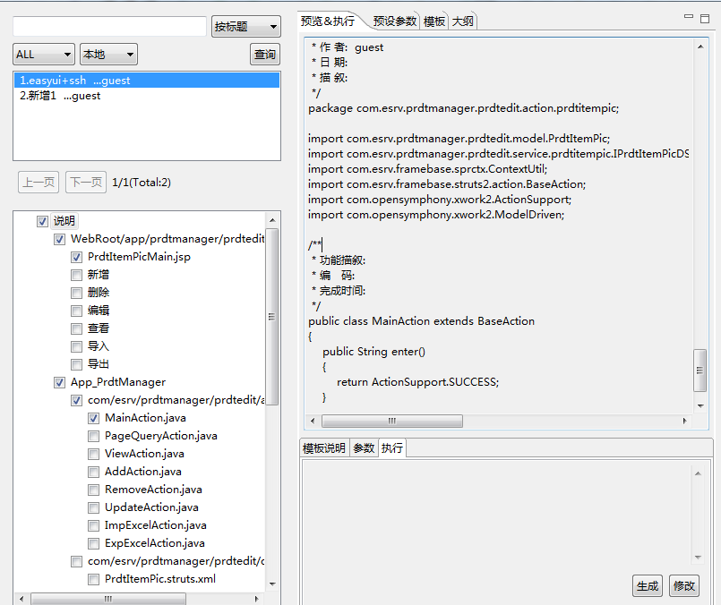
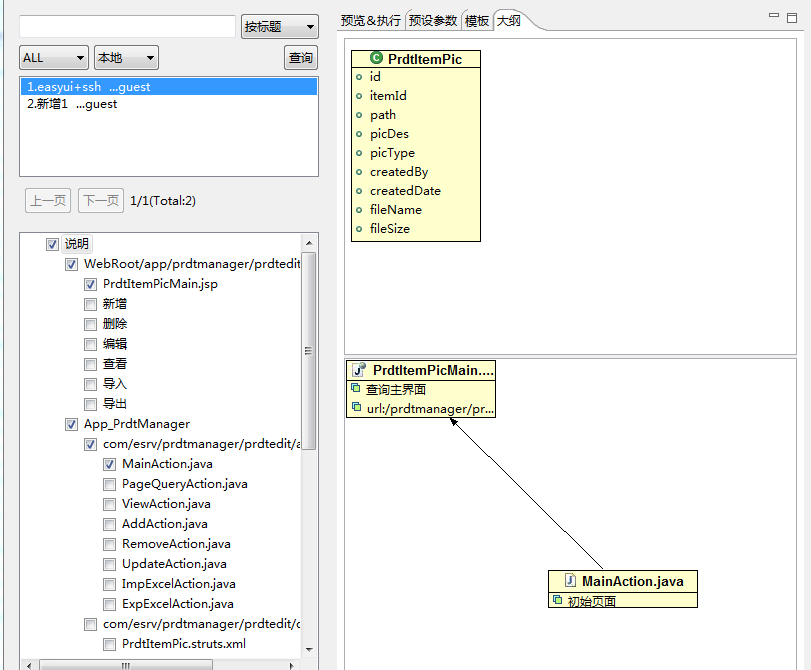

模板最好是定义清晰，有足够的说明，否则，年长日久，面对这些纷纷扰扰的代码，记忆再好也容易遗忘。这个工具既可以做为代码生成工具使用，也可以充当一般的记事本，记录某些代码片段。
1、好的模板应该有个清晰的结构，见下.
当点击左边复选框时，工具的右边栏的预览框里自动生成与所选复选框相关的代码。

2、体现生成文件之间的依赖关系.
当点击左边复选框时，工具的右边栏自动解析出与所选复选框相关的文档，如下选中两个文件的效果。
